Tutorial: Qt Widgets application
This tutorial describes how to use Qt Creator to create a small Qt application, Text Finder. It is a simplified version of the Qt UI Tools Text Finder example. You'll use Qt Widgets Designer to construct the application user interface from Qt widgets and the code editor to write the application logic in C++.
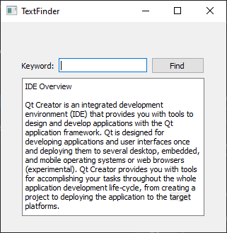
Create the Text Finder project
- Go to File > New Project > Application (Qt) > Qt Widgets Application.
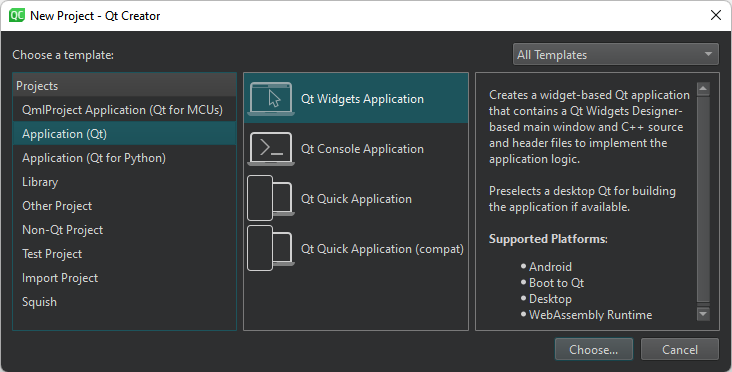
- Select Choose to open the Project Location dialog.
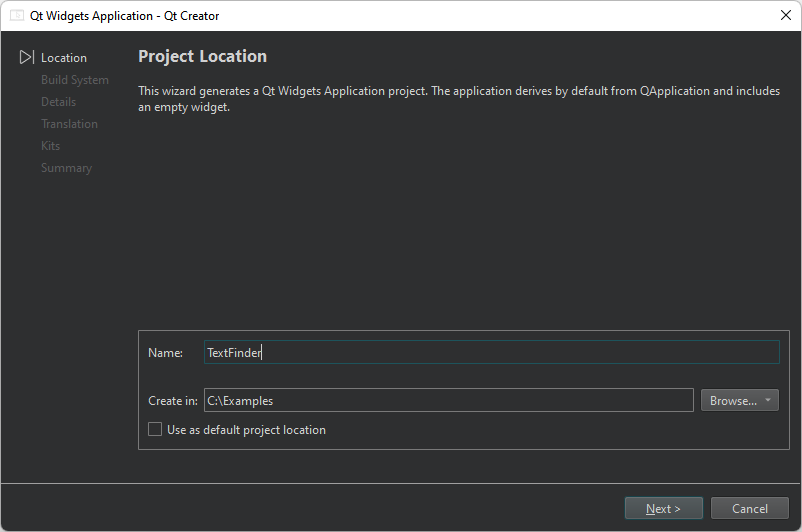
- In Name, type TextFinder.
- In Create in, enter the path for the project files. For example,
C:\Qt\examples. - Select Next (on Windows and Linux) or Continue (on macOS) to open the Define Build System dialog.
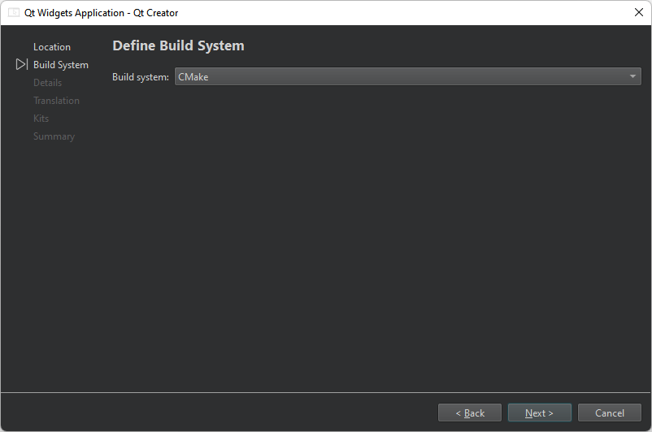
- In Build system, select CMake as the build system to use for building the project.
- Select Next or Continue to open the Class Information dialog.
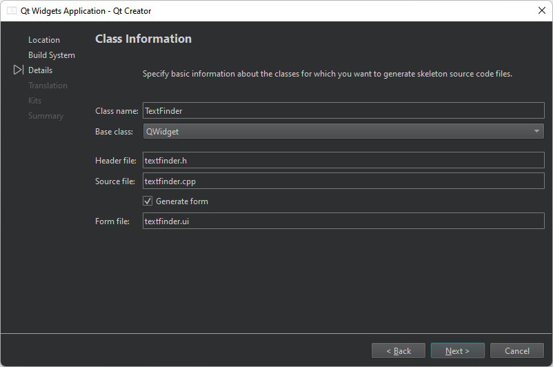
- In Class name, type TextFinder as the class name.
- In Base class, select QWidget as the base class type.
Note: Header file, Source file and Form file s are automatically updated to match the name of the class.
- Select Next or Continue to open the Translation File dialog.
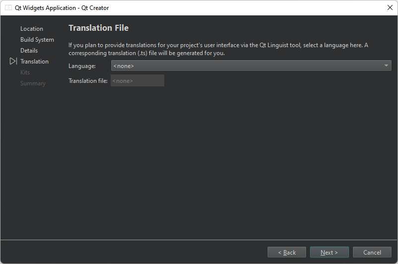
- In Language, you can select a language that you plan to translate the application to. This sets up localization support for the application. You can add other languages later by editing the project file.
- Select Next or Continue to open the Kit Selection dialog.
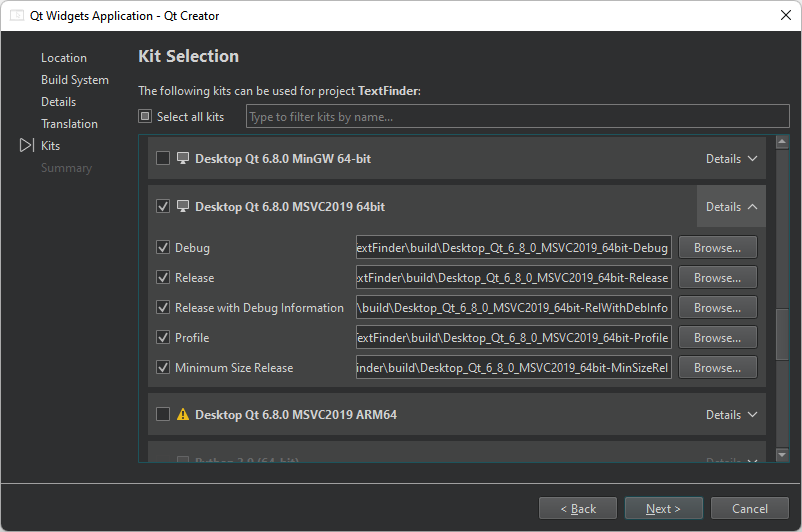
- Select build and run kits for your project.
- Select Next or Continue to open the Project Management dialog.
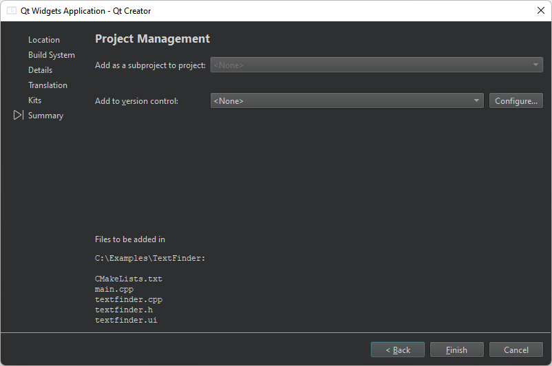
- Review the project settings, and select Finish (on Windows and Linux) or Done (on macOS) to create the project.
Note: The project opens in the Edit mode, which hides these instructions. To return to these instructions, open the Help mode.
The TextFinder project now has the following files:
main.cpptextfinder.htextfinder.cpptextfinder.uiCMakeLists.txt
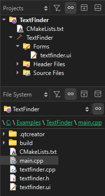
The .h and .cpp files come with the necessary boiler plate code.
If you selected CMake as the build system, Qt Creator created a CMakeLists.txt project file for you.
Fill in the missing pieces
Begin by designing the user interface and then move on to filling in the missing code. Finally, add the find functionality.
Design the user interface
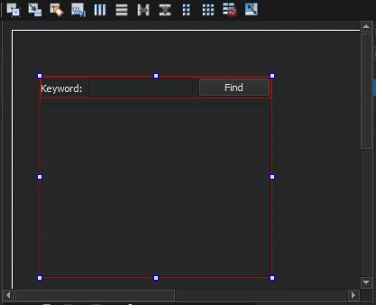
- In the Edit mode, double-click the
textfinder.uifile in the Projects view to launch the integrated Qt Widgets Designer. - Drag the following widgets to the form:
- Label (QLabel)
- Line Edit (QLineEdit)
- Push Button (QPushButton)
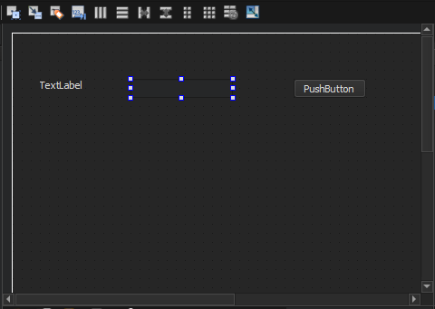
Note: To easily locate the widgets, use the search box at the top of the Widget Box. For example, to find the Label widget, start typing the word label.
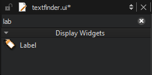
- Double-click the Label widget and enter the text Keyword.
- Double-click the Push Button widget and enter the text Find.
- In the Property Editor view, change the objectName to findButton.
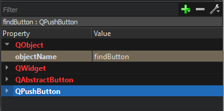
- Select Ctrl+A (or Cmd+A) to select the widgets and select Lay out Horizontally (or select Ctrl+H on Linux or Windows or Ctrl+Shift+H on macOS) to apply a horizontal layout (QHBoxLayout).
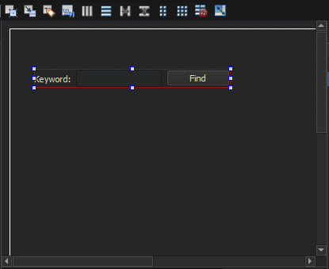
- Drag a Text Edit widget (QTextEdit) to the form.
- Select the screen area, and then select Lay out Vertically (or select Ctrl+L) to apply a vertical layout (QVBoxLayout).
Applying the horizontal and vertical layouts ensures that the application UI scales to different screen sizes.
- To call a find function when users select the Find button, you use the Qt signals and slots mechanism. A signal is emitted when a particular event occurs and a slot is a function that is called in response to a particular signal. Qt widgets have predefined signals and slots that you can use directly from Qt Widgets Designer. To add a slot for the find function:
- Right-click the Find button to open a context-menu.
- Select Go to Slot > clicked(), and then select OK.
This adds a private slot,
on_findButton_clicked(), to the header file,textfinder.hand a private function,TextFinder::on_findButton_clicked(), to the source file,textfinder.cpp.
- Select Ctrl+S (or Cmd+S) to save your changes.
For more information about designing forms with Qt Widgets Designer, see the Qt Widgets Designer Manual.
Complete the header file
The textfinder.h file already has the necessary #includes, a constructor, a destructor, and the Ui object. You need to add a private function, loadTextFile(), to read and display the contents of the input text file in the QTextEdit.
- In the Projects view in the Edit mode, double-click the
textfinder.hfile to open it for editing. - Add a private function to the
privatesection, after theUi::TextFinderpointer:private slots: void on_findButton_clicked(); private: Ui::TextFinder *ui; void loadTextFile();
Complete the source file
Now that the header file is complete, move on to the source file, textfinder.cpp.
- In the Projects view in the Edit mode, double-click the
textfinder.cppfile to open it for editing. - Add code to load a text file using QFile, read it with QTextStream, and then display it on
textEditwith QTextEdit::setPlainText():void TextFinder::loadTextFile() { QFile inputFile(":/input.txt"); inputFile.open(QIODevice::ReadOnly); QTextStream in(&inputFile); QString line = in.readAll(); inputFile.close(); ui->textEdit->setPlainText(line); QTextCursor cursor = ui->textEdit->textCursor(); cursor.movePosition(QTextCursor::Start, QTextCursor::MoveAnchor, 1); }
- To use QFile and QTextStream, add the following #includes to
textfinder.cpp:#include "./ui_textfinder.h" #include <QFile> #include <QTextStream>
- For the
on_findButton_clicked()slot, add code to extract the search string and use the QTextEdit::find() function to look for the search string within the text file:void TextFinder::on_findButton_clicked() { QString searchString = ui->lineEdit->text(); ui->textEdit->find(searchString, QTextDocument::FindWholeWords); }
- Add a line to call
loadTextFile()in the constructor:TextFinder::TextFinder(QWidget *parent) : QWidget(parent) , ui(new Ui::TextFinder) { ui->setupUi(this); loadTextFile(); }
The following line of code automatically calls the on_findButton_clicked() slot in the uic generated ui_textfinder.h file:
QMetaObject::connectSlotsByName(TextFinder);
Create a resource file
You need a resource file (.qrc) within which you embed the input text file. The input file can be any .txt file with a paragraph of text. Create a text file called input.txt and store it in the textfinder folder.
To add a resource file:
- Go to File > New File > Qt > Qt Resource File > Choose.

The Choose the Location dialog opens.
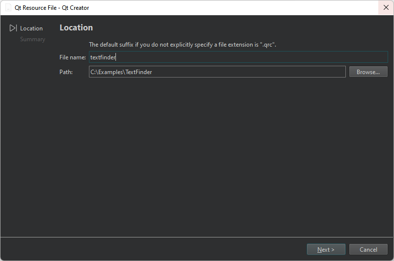
- In Name, enter textfinder.
- In Path, enter the path to the project, and select Next or Continue.
The Project Management dialog opens.
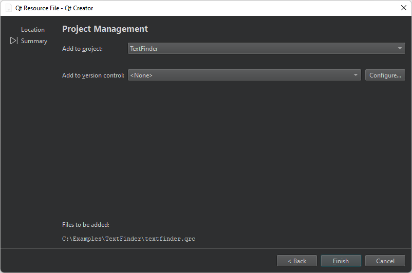
- In Add to project, select TextFinder and select Finish or Done to open the file in the code editor.
- Select Add Prefix.
- In Prefix, replace the default prefix with a slash (/).
- Select Add Files, to locate and add
input.txt.
Add resources to the project file
For the text file to appear when you run the application, you must specify the resource file as a source file in the CMakeLists.txt file that the wizard created for you:
set(PROJECT_SOURCES
main.cpp
textfinder.cpp
textfinder.h
textfinder.ui
${TS_FILES}
textfinder.qrc
)
Build and run your application
Now that you have all the necessary files, select  (Run) to build and run your application.
(Run) to build and run your application.